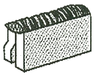
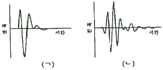
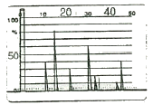
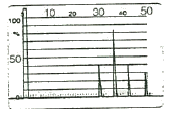
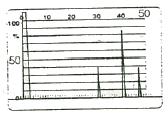
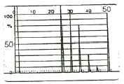

초음파비파괴검사기사 (2017-03-05 기출문제)
1과목: 비파괴검사 개론
1. 셀레늄(Selenium) 등의 반도체 뒤에 금속판을 대고 균일한 전하를 준 후 시험체를 투과한 방사선에 노출되면 방사선의 강도에 따라 반도체의 저항이 작아지고 전하가 이동하여 방전하게 되는데, 여기에 반대 전하를 도포하면 육안으로 확인 가능한 영상이 형성되며 이에 적절한 수지를 도포함으로써 영상을 형성할 수 있다. 이 원리를 이용하는 방법을 무엇이라고 하는가?
- 건식 방사선 투과검사법(Xero radiography)
- 전자 투과검사법(Electron radiography)
- 자동 방사선 투과검사법(Auto radiography)
- 순간 방사선 투과검사법(Flash radiography)
(정답률: 78%)

2. 결함의 형상을 육안으로 확인할 수 있어 해석이 용이한 비파괴검사법만으로 조합된 것은?
- 방사선투과검사, 자분탐상검사
- 초음파탐상검사, 침투탐상검사
- 와전류탐상검사, 자분탐상검사
- 와전류탐상검사, 침투탐상검사
(정답률: 74%)
3. 부품의 체적검사에 적용되는 비파괴검사의 물리적 현상은?
- 전자파, 열
- 방사선, 초음파
- 전자파, 음파
- 침투액, 미립자
(정답률: 76%)
4. 압력용기 내에 있는 이상기체에 2배의 압력을 가하면, 이 이상기체의 부피는 몇 배가 되는가? (단, 온도는 일정하다)
- 1/2
- 1
- 2
- 4
(정답률: 73%)
5. 침투탐상검사에서 침투액의 점성(Viscosity)은 침투액의 어떠한 성능에 가장 큰 영향을 미치는가?
- 침투력
- 세척성
- 형광성
- 침투속도
(정답률: 67%)
6. 주철에서 흑연의 구상화 원소가 아닌 것은?
- Mg
- Ce
- Ca
- Sn
(정답률: 55%)
7. 46% Ni-Fe 합금으로 초기에는 Pt를 대용하는 전구 봉입선으로 사용하였으나 Dume선이 개발되어 전자관, 전구, 방전램프 등 연질유리의 봉입부에 사용하는 것은?
- 라우탈(Lautal)
- 퍼말로이(Permalloy)
- 콘스탄탄(Constantan)
- 플래티나이트(Platinite)
(정답률: 72%)
8. 시효경화성이 있으며, Cu 합금 중에서 경도 및 강도가 가장 큰 합금계는?
- Cu - Ag계
- Cu - Pt계
- Cu - Be계
- Cu - Zn계
(정답률: 53%)
9. 특정온도의 3원계 금속 상태도에서 3상으로 공존할 때의 자유도는 얼마인가? (단, 압력은 일정하다.)
- 0
- 1
- 2
- 3
(정답률: 64%)
10. 형상기억효과나 초탄성 현상을 나타내는 합금이 아닌 것은?
- N-Ti
- Cu-Al-Ni
- Cu-Zn-Al
- Al-Cu-Si
(정답률: 40%)
11. 순철의 변태에 관한 설명 중 틀린 것은?
- 동소변태는 A3와 A4 변태가 있다.
- Ar은 냉각변태, Ac는 가열변태를 의미한다.
- A2 변태점을 시멘타이트의 자기변태점이라 한다.
- 자기변태는 자기적 성질이 변화하는 변태이다.
(정답률: 68%)
12. 정적 하중으로 파괴를 일으키는 응력보다 훨씬 낮은 응력으로도 반복하여 하중을 가하게 되면 파괴되는 현상은?
- 마모(wear)
- 피로(fatigue)
- 크리프(creep)
- 취성파괴(brittle fracture)
(정답률: 73%)
13. 실루민을 Na 혹은 NaF로 개량처리하는 주된 목적은?
- 공정점 부근 조성의 Si 결정을 미세화하기 위하여
- 공석점 부근 조성의 Si 결정을 미세화하기 위하여
- 공정점 부근 조성의 Fe 결정을 미세화하기 위하여
- 공석점 부근 조성의 Fe 결정을 미세화하기 위하여
(정답률: 48%)
14. 활동 가공재를 상온에서 방치할 경우 시간의 경과에 따라 가공에 의한 불균일 변형(strain)이 균등화되어 경도 등 여러 성질이 악화하는 현상은?
- 패턴팅
- 용체화
- 가공경화
- 경년변화
(정답률: 67%)
15. 분말야금의 특징을 옳게 설명한 것은?
- 절삭공정을 생략할 수 있다.
- 다공질 재료를 제조할 수 없다.
- 재료를 융해하여야만 제조가 가능하다.
- Fe계 제품의 금속표면층을 침탄으로 경화시킬 수 없다.
(정답률: 69%)
16. 용점 후 용접변형에 대한 교정방법이 아닌 것은?
- 전진법
- 롤러에 의한 법
- 가열 후 해머질하는 법
- 얇은 판에 대한 점 수축법
(정답률: 69%)
17. 다음 그림과 같은 용접이음의 명칭으로 옳은 것은?

- 겹치기 이음
- 변두리 이음
- 맞대기 이음
- 측면 필릿 이음
(정답률: 67%)
18. 피복 아크 용접 작업에서 아크 발생을 4분, 아크 정지를 6분 하였다면 용접기 사용률은?
- 20%
- 30%
- 40%
- 60%
(정답률: 76%)
19. 일반적인 용접의 특징으로 틀린 것은?
- 재료가 절약되고 중량이 가벼워진다.
- 기밀성, 수밀성이 우수하며 이음 효율이 높다.
- 재질의 변형이나 잔류응력이 발생하지 않는다.
- 소음이 적어 실내 작업이 가능하고 복잡한 구조물 제작이 쉽다.
(정답률: 74%)
20. 피복 아크 용접에서 아크쏠림을 방지하기 위한 조치 사항으로 틀린 것은?
- 직류(DC)용접기 대신 교류(AC)용접기를 사용한다.
- 접지점을 될 수 있는 대로 용접부에서 멀리한다.
- 피복제가 모재에 접촉할 정도로 짧은 아크를 사용한다.
- 용접봉 끝을 아크 쏠림 동일방향으로 기울인다.
(정답률: 70%)
2과목: 초음파탐상검사 원리
21. 초음파탐상검사에서 접촉매질의 사용 목적이 아닌 것은?
- 탐촉자와 시험체 사이의 공기 제거
- 탐촉자와 시험체의 음향 임피던스 조화
- 음향 전달 효율 향상
- 시험속도 증가
(정답률: 81%)
22. 전자주사형 초음파탐상검사에서 사용되는 배열형(Array) 탐촉자에 대한 설명으로 틀린 것은?
- 고속 자동탐상에 적합하다.
- 동시에 실시간으로 이미지화 할 수 있다.
- C Scope 동시에 실시간으로 이미지화 할 수 없다.
- 음향집속은 음향렌즈에 의한다.
(정답률: 82%)
23. 초음파탐상검사에 대한 설명으로 틀린 것은?
- 강 보다 알루미늄의 빔 분산각이 크다.
- 불규칙한 강도가 존재하는 초음파 빔의 영역을 “원 거리음역”이라고 한다.
- 탐촉자의 진동수는 주로 결정체 두께의 영향을 가장 크게 받는다.
- 검사체 내에서 결함을 검출하는 능력을 향상시키려면 펄스의 폭을 좁히면 된다.
(정답률: 62%)
24. 알루미늄과 강의 계면에서 음압반사율은 약 몇 %인가? (단, 알루미늄 : VAL=6320m/s, 밀도=2700kg/m3, 강 : VL=5920m/s, 밀도=7850kg/m3이다.)
- 13%
- 46%
- 75%
- 100%
(정답률: 50%)
25. 피검체의 표면 거칠기는 감도와 분해능 저하의 주료 원인이 된다. 이에 대한 설명으로 틀린 것은?
- 표면 거칠기로 인해 탐촉자의 송신펄스가 길어져 근거리음장 영역이 짧아지는 현상이 발생한다.
- 표면을 매끈하게 하거나 탐상기의 게인을 높임으로서 감도와 분해능 저하를 줄일 수 있다.
- 표면 거칠기로 인해 피검체 표면에서의 굴절과 저면에서의 난반사로 인한 산란으로 감도가 떨어진다.
- 감도가 분해능 저하를 막기 위해 탐촉자는 저주파수를 사용하거나 초음파 출력이 높은 것을 사용한다.
(정답률: 59%)
26. 초음파탐상검사에서 투과법에 대한 설명으로 틀린 것은?
- 투과법은 2개의 송수신 탐촉자를 이용하여 수직탐상만 적용한다.
- 시험체 내의 결함에 의한 산란 등의 원인에 의해 초음파가 감쇠하는 정도에 따라 결함 크기를 아는 방법이다.
- 결함이나 시험체의 조직에 의한 초음파의 감쇠로부터 판단하는 것이다.
- 시험체의 다른 표면에서 초음파를 송수신하는 경우가 많다.
(정답률: 66%)
27. 초음파탐상검사에서 누설 램파법의 특징이 아닌 것은?
- 두 장의 판재를 접합한 재료의 접합계면의 양부 판단에 이용된다.
- 수침 1탐촉자 경사각법으로 배열하면 판상재료에 경사로 입사한 종파가 판두께와 주파수에 의해 결정되는 조건하에서 램파로 변화하여 판재 내부를 전파한다.
- 누설 램파가 발생하면 반사파의 음장에는 경계면 반사파의 성분과 누설파 및 그들과의 위상간섭대가 생긴다.
- 널영역의 음압은 경계조건의 영향을 강하게 받기 때문에 두장의 판재를 접착한 재료의 접합면의 상태에 대해 민감하게 반응한다.
(정답률: 64%)
28. 얇은 수정판에 일정 전압을 가하였을 때의 현상으로 옳은 것은?
- 열이 나서 쉽게 파괴된다.
- 아무 변화도 안 일어난다.
- 두께 방향으로 고주파 진동이 일어난다.
- 두께 반대 방향으로 저주파 진동이 일어난다.
(정답률: 57%)
29. 수정진동자에서 Z와 Y축에 평행하고 X축에 수직인 면을 갖는 결정체를 무엇이라 하는가?
- Y-cut
- X-cut
- Z-cut
- XY-cut
(정답률: 73%)
30. 용접부 경사각탐상에 대한 설명으로 옳은 것은?
- 결함, 이물질 또는 공동에 부딪히면 그대로 투과한다.
- 결함크기가 초음파 파장의 1/2보다 작으면 초음파는 잘 반사되지만, 결함의 형상이나 방향에 따라서 반사의 패턴은 동일하다.
- 평면형의 반사원인 균열면에 수직으로 초음파가 입사하면 결함에 코 높이는 높아진다.
- 용접부 탐상면이 거친 경우 높은 주파수를 사용한다.
(정답률: 57%)
31. 초음파탐상검사에서 Y-cut 진동자의 파형은?
- 종파
- 횡파
- 판파
- 종파 및 횡파
(정답률: 72%)
32. 강에 굴절각 45° 탐촉자 wedge를 설계하고자 한다면 시험재 표면과 wedge가 이루는 각(θ1)은 얼마로 하여야 하겠는가? (단, wedge 내에서의 속도 = 2730m/sec, 강에서의 속도 : 종파 = 900m/sec, 횡파 = 3230m/sec 이다.)
- 36.7°
- 39.7°
- 26.4°
- 23.4°
(정답률: 49%)
33. 판재의 수직탐상법에서 결함을 탐상하였을 때 제1회 결함에코 보다 제2회, 제3회의 에코가 더 높게 나타나는 현상은?
- 적산효과
- 모드변화 효과
- 간섭효과
- 확산효과
(정답률: 68%)
34. 초음파탐상검사에서 원거리음장에서 빔(beam)의 분산각이 작은 탐촉자는?
- 2.25MHz, 3/8인치 직경의 탐촉자
- 5.0MHz, 1인치 직경의 탐촉자
- 2.25MHz, 1인치 직경의 탐촉자
- 5.0MHz, 3/8인치 직경의 탐촉자
(정답률: 66%)
35. 초음파탐상기에서 1초 동안에 나오는 송신 펄스의 수는?
- 펄스 결함률
- 펄스 수신율
- 펄스 반복률
- 펄스 시간율
(정답률: 75%)
36. 초음파탐상검사에 사용되는 시험편에 관한 설명으로 틀린 것은?
- STB-A1 표준시험편과 IIW 시험편은 기본적으로 동일한 규격을 갖는다.
- STB-A1과 A2 시험편을 조합하여 만든 STB-A3 시험편은 이동이 편리하다.
- STB-G 시험편은 경사각탐상의 감도조정 및 탐촉자의 성능시험에 사용된다.
- RB-4 대비시험편은 사각 및 수직탐상의 거리 진폭 특성곡선 작성에 사용된다.
(정답률: 59%)
37. 초음파탐상검사에서 주파수 선택에 대한 설명으로 틀린 것은?
- 감쇠가 클 경우에는 낮은 주파수가 좋다.
- 낮은 주파수 쪽이 분해능이 좋고 작은 결함의 검출에 적합하다.
- 주파수가 높은 쪽이 결함의 크기를 정하는데 정밀도가 높다.
- 주파수가 높은 쪽이 지향성이 좋다.
(정답률: 80%)
38. 초음파 CT검사 방법에 대한 설명으로 틀린 것은?
- 촬영상으로부터 얻어진 흡수계수의 분포를 역연산하여 영상화한 것이다.
- 음속에 의한 CT상은 음속의 역수의 분포를 그 전파시간의 촬영상으로 구한다.
- 초음파에 의해 CT상을 구상하기 위해서는 가시화하려하는 단면 주위에 다수 점간의 측정이 필요하다.
- 촬영 데이터로는 음속(전파시간) 및 감쇠(진폭)가 이용된다.
(정답률: 48%)
39. 초음파탐상검사에서 근거리 음장을 최소화하기 위한 방법으로 옳은 것은?
- 파장의 크기를 줄인다.
- 탐촉자의 직경을 증가시킨다.
- 속도를 줄인다.
- 탐상 주파수를 낮춘다.
(정답률: 45%)
40. 에코높이에 영향을 미치는 인자가 아닌 것은?
- 결함의 크기
- 결함의 형상
- 결함의 발생시기
- 결함의 기울기
(정답률: 90%)
3과목: 초음파탐상검사 시험
41. 두께 25mm 인 용접부위를 굴절각 45°의 탐촉자로 2스킵까지 경사각탐상 할 때 2스킵거리 (Y2.0s)는 몇 mm인가?
- 100
- 125
- 150
- 200
(정답률: 62%)
42. 주강품과 단강품을 초음파탐상검사하였을 때 감쇠 현상을 설명한 것으로 옳은 것은?
- 일반적으로 주강품이 단강품보다 감쇠가 크다.
- 일반적으로 단강품이 주강품보다 감쇠가 크다.
- 주강품, 단강품 모두 감쇠가 일어나지 않는다.
- 일반적으로 주강품, 단강품의 감쇠 정도는 같다.
(정답률: 57%)
43. 경사각탐상의 성능특성측정에 사용하는 대비시험편으로 틀린 것은?
- RB-4
- RB-5
- RB-6
- RB-7
(정답률: 42%)
44. 다음 그림은 탐촉자의 펄스파형이다. 이와 관련된 설명으로 옳은 것은?

- (ㄱ)은 펄스 폭이 짧기 때문에 협대역형 탐촉자라 불리며 근거리 결함의 분리를 목적으로 사용된다.
- (ㄱ)은 펄스 폭이 짧기 때문에 광대역형 탐촉자라 불리며 고분해능 탐촉자로 사용된다.
- (ㄴ)은 펄스 폭이 길기 때문에 협대역형 탐촉자라 불리며 박판 탐상의 목적으로 사용된다.
- (ㄴ)은 펄스 폭이 길기 때문에 광대역형 탐촉자라 불리며 고감도 탐촉자로 사용된다.
(정답률: 59%)
45. STB-G형 시험편에서 V15-4가 의미하는 것은?
- 표면에서 저면까지의 거리가 150mm이고 결함의 깊이가 4mm이다.
- 표면에서 결함까지의 거리가 150mm이고 결함의 깊이가 4mm이다.
- 표면에서 저면까지의 거리가 15mm이고 결함의 깊이가 4mm이다.
- 표면에서 결함까지의 거리가 15mm이고 결함의 깊이가 4mm이다.
(정답률: 55%)
46. 탐상장치의 성능 중에서 이 성능이 나쁘면 정확한 에코높이가 얻어지지 않고 결함을 빠뜨리기도 하고 결함을 과소 또는 과대평가하게 되는 것은?
- 증폭직선성
- 시간축직선성
- 근거리분해능
- 방위분해능
(정답률: 58%)
47. 초음파탐상장치의 기능 중 스크린에 나타난 지시의 간격을 변동시키지 않고 지시를 이동시킬 수 있는 장치의 노브는?
- Sweep delay 노브
- Sweep lengrh 노브
- Gain 노브
- Attenuator 노브
(정답률: 71%)
48. 2Q20N의 탐촉자를 사용하여 측정범위를 40mm로 조정하고 두께 100mm의 대비시험편의 B1 에코높이 HB1을 80%로 조정하였더니 B2 및 B3 에코높이 HB2, HB3는 각각 50% 및 30%였다. 이 감도에서 두께 140mm의 시험체의 건전부의 저면에코를 측정하였더니 B1에코 및 B2에코의 높이가 각각 50% (H1), 20% (H2)였다. 시험체와 대비시험편의 감쇠계수차는 몇 dB 인가? (단, B1, B2에 해당하는 대비시험편의 거리진폭곡선의 높이는 각각 65%, 34%이다.)
- 0.0⑤dB
- 0.008dB
- 0.010dB
- 0.016dB
(정답률: 57%)
49. 5C20N을 이용하여 측정범위를 종파 250mm로 조정하고 STB-G V15-5.6을 탐상하였다. 다음의 탐상도형 중 올바른 것은?




(정답률: 45%)
50. 초음파탐상시험 방법에 속하지 않는 것은?
- 흡수법
- 공진법
- 투과법
- 펄스 반사법
(정답률: 68%)
51. 수직탐상을 이용하여 알루미늄 시험체 결함의 크기를 6dB drop법으로 추정하였다. 계산의 편의를 위해 철강재 검사 때와 동일한 탐촉자의 지향각을 그대로 사용했을 때 결함크기의 평가 결과는?
- 실제보다 크게 평가된다.
- 실제보다 작게 평가된다.
- 실제와 동일하게 평가된다.
- 시럼주파수에 따라 달라질 수 있다.
(정답률: 60%)
52. 용접부를 초음파탐상검사할 때 용접선상 주사 및 경사평행 주사는 표면 근방의 어떤 결함을 탐지할 목적으로 주로 실시하는가?
- 융합불량 탐지
- 용접부의 횡균열 탐지
- 용접부의 종균열 탐지
- 용접부의 내부용입부족 탐지
(정답률: 56%)
53. 탐촉자의 감도가 커지는 경우는?
- Q값이 작을 때
- 대역 폭(band width)이 작을 때
- 펄스 폭(pulse width)이 작을 때
- 분해능이 클 때
(정답률: 35%)
54. 음향이방성 측정에 사용하는 탐촉자는?
- 직속수직 탐촉자
- 2진동자 탐촉자
- 가변각 탐촉자
- 횡파수직 탐촉자
(정답률: 43%)
55. 초음파탐상장치에서 스크린상에 결함에코 높이가 20%에 위치하고 저면에코높이가 50%에 나타났다. 임상에코가 많아 리엑션(rejection)을 조정하였더니 저면에코높이가 25%로 조정되었다. 결함에코높이는 어떻게 되는가?
- 나타나지 않는다.
- 10%에 나타난다.
- 20%에 나타난다.
- 25%에 나타난다.
(정답률: 62%)
56. 수직탐상에서 탐촉자의 진동자 치수보다 불연속의 길이가 큰 경우 불연속의 길이측정에 널리 사용되는 방법은?
- Top echo법
- TOFD법
- Tandom법
- 6dB drop법
(정답률: 63%)
57. 직경이 30mm, 높이가 2mm인 디스크의 무게를 측정하니 0.3kg이었다. 또한 오실로스코프를 이용하여 인접한 두 개의 저면 반사파의 시간 간격이 30μsec임을 측정하였다. 이 재료의 음향 임피던스는? (단, SI 단위로 구하시오.)
- 2.78 × 107
- 6.6 × 102
- 3.4 × 106
- 2.5 × 104
(정답률: 47%)
58. 초음파탐상시험에서 스크린상에 나타난 지시가 5% 위치에 있었다. 이 지시를 80% 위치에 오도록 하려면 감쇠기를 몇 dB 움직여야 하는가?
- 14 dB
- 24 dB
- 38 dB
- 52 dB
(정답률: 56%)
59. 수직탐상법에서 STB V15-2로 감도를 조정하였다. 이 때 인공결함 신호를 스크린 높이의 10%로 한다. 실제 검사에서 결함으로부처 신호가 80%였다면 기준치보다 몇 dB 차가 나는가?
- +37 dB
- +18 dB
- -28 dB
- -15 dB
(정답률: 71%)
60. 수소성 결함과 같이 지연 발생 가능성이 있는 강판의 초음파 검사 시기는?
- 압연종료 후
- 열처리 전
- 열처리 중
- 그라인더 손질 정도 단계
(정답률: 67%)
4과목: 초음파탐상검사 규격
61. 강 용접부의 초음파탐상시험방법(KS B 0896)에서 거리 진폭 특성 곡선의 에코높이와 빔 노정과의 관계를 직선으로 가정하여 그 경사를 나타낸 것은?
- DAC의 기점
- DAC 범위
- DAC 경사값
- DAC의 조정점
(정답률: 62%)
62. 알루미늄 맞대기 용접부의 초음파 경사각 탐상시험방법(KS B 0896)에서 모재 두께가 60mm일 때 흠 길이가 19mm이면 흠의 분류는? (단, A종으로 구분된다.)
- 1류
- 2류
- 3류
- 4류
(정답률: 25%)
63. 알루미늄 맞대기 용접부의 초음파경사각탐상 시험방법(KS B 0896)에 경사각 탐촉자의 시험주파수 범위로 옳은 것은?
- 0.5MHz 이상 2MHz 이하
- 1MHz 이상 4.5MHz 이하
- 2MHz 이상 5MHz 이하
- 4.5MHz 이상 5.5MHz 이하
(정답률: 48%)
64. 강 용접부의 초음파탐상시험방법(KS B 0896)에서 길이이음 곡률 용접부를 경사각 탐상할 때 탐촉자 접촉면의 곡률반지름은 시험재의 곡률 반지름의 몇 배 이상 몇 배 이하여야 하는가?
- 1.1배 이상 3.1배 이하
- 1.1배 이상 2.0배 이하
- 1.1배 이상 1.5배 이하
- 1.0배 이상 1.1배 이하
(정답률: 67%)
65. 강 용접부의 초음파탐상시험방법(KS B 0896)에서 RB-A6, RB-A8 대비시험편 제작할 때 대비 시험편의 곡률 반지름은 시험체 곡율 반지름의 몇 배인가?
- 0.5배 이상 0.9배 이하
- 0.5배 이상 1.5배 이하
- 0.9배 이상 1.5배 이하
- 2/3배 이상 1.5배 이하
(정답률: 71%)
66. 강 용접부의 초음파탐상시험방법(KS B 0896)에서 규정하는 경사각 탐촉자의 공칭 굴적각이 아닌 것은?
- 30°
- 45°
- 60°
- 70°
(정답률: 70%)
67. 압력용기용 강판의 초음파탐상검사방법(KS D 0233)에 따른 내부결함 보수 시 제거부분의 깊이는 공칭 판 두께의 몇 % 이내로 하는가?
- 10%
- 15%
- 20%
- 25%
(정답률: 27%)
68. 보일러 및 압력용기에 대한 초음파탐상검사(ASME Sec.V Art.4)에서 용접부에 대한 초음파탐상시험할 때 주사감도는 기준감도보다 최소 몇 dB 높게 해야 하는가?
- 6dB
- 12dB
- 14dB
- 18dB
(정답률: 55%)
69. 강 용접부의 초음파탐상시험방법(KS B 0896)에서 탐상기의 성능 점검에 대한 설명 중 틀린 것은?
- 시간축 직선성은 장치 구입 시 및 12개월 이내마다 점검한다.
- 증폭 직선성은 장치 구입시 및 12개월 이내마다 점검한다.
- 감도 여유값은 장치 구입 시 및 12개월 이내마다 점검한다.
- 전원 전압의 변동 안정도는 장치 구입 시 및 12개월 이내 마다 점검한다.
(정답률: 64%)
70. 초음파펄스반사법에 의한 두께 측정 방법 (KSB ⑤36)을 따른 펄스반사식 초음파두께 계기의 성능측정 방법에 관한 설명으로 옳지 않은 것은?
- 측정 하한의 측정에 사용하는 시험편은 반드시 RB-T를 사용하여야 한다.
- 넓적 바닥 구멍의 거리측정에는 표준시험편 STB-G V2, V3, V5, V8 및 STB-A2를 사용하여도 된다.
- 음속 조정은 측정기에 부속된 시험편이 없는 경우, 대비 시험편 RB-D의 1개 또는 2개의 두께를 사용하여야 한다.
- 오차 측정에 사용하는 시험편은 측정 범위가 50mm를 초과하는 두께를 측정할 수 있는 장치의 경우, 범위 내의 적절한 3단계의 두께를 선택한다.
(정답률: 48%)
71. 강 용접부의 초음파탐상시험방법(KS B 0896)에서 곡률의 반지름이 얼마 이상일 때 평판으로 간주하는가?
- 250mm
- 300mm
- 500mm
- 1000mm
(정답률: 43%)
72. 보일러 및 압력용기에 대한 표준초음파탐상검사(ASME Sec.V Art.23 SA-388)의 내용으로 옳지 않은 것은?
- 초음파탐상장치의 스크린높이 직선성은 ±5% 이내이어야 한다.
- 일반적으로 사용되는 탐촉자 공칭 주파수는 1MHz ~ 5MHz 이다.
- 초음파 탐상장치는 시험감도는 2dB 이하의 단계로 조절되어야 한다.
- 니켈 합금에 사용되는 접촉매질은 300ppm 이상의 황을 포함해야 한다.
(정답률: 61%)
73. 보일러 및 압력용기에 대한 표준초음파탐상검사(ASME Sec.V Art.23 SA-388)에 따라 저면반사기법으로 수직 탐상할 때 저면반시기법으로 수직 탐상할 때 저면반사에코높이의 감소를 일으키는 원인이 아닌 것은?
- 불연속의 존재
- 두께의 감소
- 접촉 불량
- 전면과 후면이 팽행하지 않은
(정답률: 77%)
74. 보일러 및 압력용기에 대한 표준초음파탐상검사(ASME Sec.V Art.4)에서 배관 용접부의 기본 교정시험편의 노치 깊이로 옳은 것은?
- 최소 1.6%T에서 최대 2.2%T(T: 공칭 단벽 두께)
- 최소 3T에서 최대 6%T(T: 공칭 단벽 두께)
- 최소 8%T에서 최대 11%T(T: 공칭 단벽 두께)
- 최소 12%T에서 최대 15%T(T: 공칭 단벽 두께)
(정답률: 40%)
75. 강 용접부의 초음파탐상시험방법(KS B 0896)에서 탐촉자에 필요한 기능에 대한 설명으로 틀린 것은?
- 경사각 탐촉자의 양쪽에는 1mm 간격으로 가이드 눈금으로 표시 한다.
- 수직 탐촉자는 진동자는 원형으로 하고 공칭주파수에 따라 치수가 정해진다.
- 탠덤 탐상에 사용하는 탐촉자의 진동자 공칭치수는 경사각으로 표시 한다.
- 시험 주파수는 공칭 주파수의 90~110%의 범위 내로 한다.
(정답률: 38%)
76. 강 용접부의 초음파탐상시험방법(KS B 0896)에서 탐상감도 조정을 할 때 RB-4를 이용할 경우 표준 구멍의 에코높이 선으로 옳은 것은?
- L선
- M선
- H선
- 탐상 감도 조정 시 RB-4는 사용하지 않는다.
(정답률: 44%)
77. 보일러 및 압력용기에 대한 초음파탐상검사(ASME Sec.V Art.4)에서 비 배관의 수직 빔 교정에서 거리 진폭 교정장치로 교정하였을 경우 기본 교정시험편으로부터 응담 신호범위로 옳은 것은?
- 전스크린 높이의 20%~60%
- 전스크린 높이의 20%~80%
- 전스크린 높이의 40%~60%
- 전스크린 높이의 40%~80%
(정답률: 44%)
78. 보일러 및 압력용기에 대한 표준초음파탐상검사(ASME Sec.V Art.5)에서 탐상 지시평가할 때 DAC의 몇 % 초과하는 지시를 적용 코드에 따라 판정 하는가?
- 10%
- 20%
- 50%
- 100%
(정답률: 47%)
79. 보일러 및 압력용기에 대한 표준초음파탐상검사(ASME Sec.V Art.23 SB-548)에서 주사 속도는 얼마를 초과하지 않도록 규정하고 있는가?
- 5인치/초
- 6인치/초
- 10인치/초
- 12인치/초
(정답률: 33%)
80. 강 용접부의 초음파탐상시험방법(KS B 0896)에서 수직탐상의 에코높이 구분선 작성 시 RB-4 두께가 120mm일 경우 최대 에코의 피크위치가 나타나는 표준 원과 탐촉자의 거리가 아닌 것은?
- 31 mm
- 94 mm
- 125 mm
- 156 mm
(정답률: 47%)